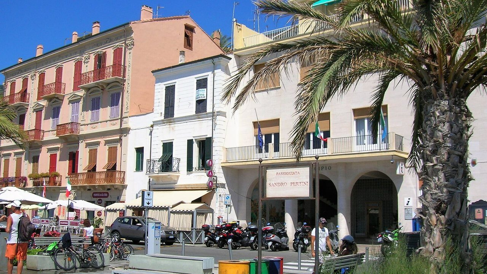

Race, The Poggio

Behind
Best +0:01
371W
Target 418 W-47 W
- Cadence
- 87rpm
- Heart
- 140bpm
- Speed
- 26.5km/h
Cool-down15 of 15
0:21
Finish
-0.1%
179 m climbed
11.41 km
12
Resistance / 32
Solo races your best-time ghost: position reads Ahead or Behind, and solo alone gets a Pause button. Frozen at 28:09.